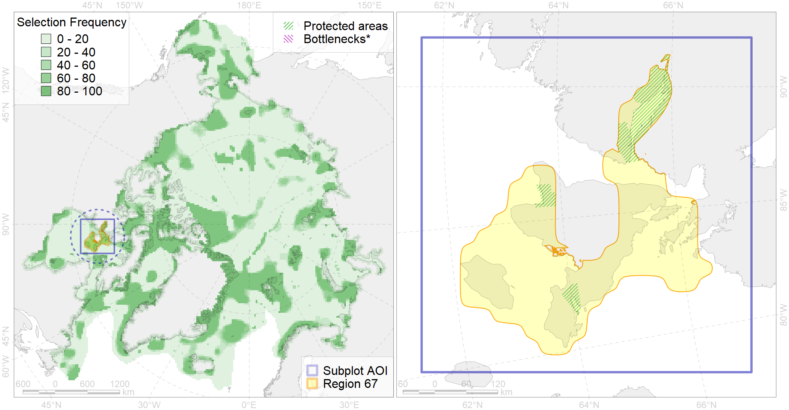

Region 67
Region 67
“ArcNet” scenario 33 achievement for region 67.
Use Accenter for advanced mode.

0
CFs inside of Region completely
6
CFs inside of Region at quarter
4
Complete-targets achievement by Region
13
Half-targets achievement by Region
| CF | Name | Target Achievement for Region | Proportion of Target Achievement in Region | Amount Proportion in Region |
|---|---|---|---|---|
| 5087 | Narwhal Northern Hudson Bay stock summer distribution | 167.5% | 95.2% | 87.0% |
| 5088 | Narwhal Northern Hudson Bay stock summer core distribution | 98.9% | 94.4% | 73.6% |
| 3127 | polynya Foxe | 275.4% | 37.2% | 35.4% |
| 9025 | polar bear denning areas of FB (Foxe Basin) subpopulation | 49.3% | 49.2% | 34.0% |
| 9007 | polar bear of the FB (Foxe Basin) subpopulation distribution | 82.8% | 66.6% | 29.9% |
| 3053 | Multiyear Ice distribution in September in the Hudson Bay LME | 133.8% | 32.3% | 25.8% |
| 1011 | Atlantic Walrus haulouts in Nunavut and West Greenland | 21.6% | 21.6% | 20.9% |
| 8024 | intertidal zone of the Hudson Bay LME | 55.6% | 48.1% | 19.7% |
| 3128 | polynya Hudson W | 94.7% | 38.5% | 13.0% |
| 6064 | Common eider (Somateria mollissima sedentari) Hudson Bay breeding&moulting grounds | 16.9% | 16.8% | 10.8% |
| 7045 | Fox Basin trnasitional zone | 54.2% | 26.0% | 9.6% |
| 3035 | Marginal Ice Zone distribution in July in the Hudson Bay LME | 30.0% | 21.0% | 8.2% |
| 7169 | IV.2.2. central Hudson Bay | 179.5% | 53.2% | 8.0% |
| 7170 | IV.2.3. Hudson Bay slope | 59.0% | 24.8% | 7.4% |
| 2022 | Harp seal foraging areas in the Hudson Bay | 26.4% | 26.3% | 7.2% |
| 7139 | III.1.1.6. Foxe Basin middle shelf | 42.7% | 16.3% | 6.9% |
| 1002 | Atlantic Walrus Summer Distribution in Canada | 15.4% | 10.5% | 5.9% |
| 5065 | Killer whale summer feeding areas in the North West Atlantic | 87.5% | 8.9% | 5.9% |
| 7028 | Hudson Bay enclave | 53.2% | 33.5% | 5.6% |
| 4075 | Fish zoogeography, Arctic Region, High-Arctic Shelf Province, Hudson District | 46.4% | 16.6% | 4.8% |
| 2048 | Ringed seal whelping areas in the Hudson Bay area | 17.3% | 16.2% | 4.7% |
| 5103 | Bowhead whale Baffin population spring-autumn distribution | 17.0% | 9.3% | 4.7% |
| 2010 | Bearded seal whelping areas in the Hudson Bay | 17.0% | 17.0% | 4.7% |
| 5039 | Bowhead whale autumn concentrations in the Baffin Bay | 8.2% | 8.1% | 4.4% |
| 8037 | Salt marshes of the Hudson Bay LME | 13.3% | 9.5% | 4.2% |
| 4031 | Feeding area of the Brook Trout (Salvelinus fontinalis) (F 29) | 23.6% | 9.8% | 3.8% |
| 1003 | Atlantic Walrus Wintering Areas in Canada | 4.0% | 3.5% | 3.3% |
| 2019 | Harbour seal range in the North Atlantic region | 44.3% | 6.7% | 3.0% |
| 6015 | Black guillemot (Cepphus grylle mandti) breeding grounds | 17.6% | 3.8% | 2.3% |
| 4029 | Feeding area of the Arctic charr (Salvelinus alpinus), anadromous populations (F28) | 5.3% | 4.6% | 2.3% |
| 4055 | Range of the Shorthorn Sculpin (Myoxocephalus scorpius) (F 46), American populations | 65.6% | 3.7% | 2.2% |
| 5041 | Bowhead whale summer concentrations in the Baffin Bay | 4.1% | 4.0% | 2.2% |
| 4053 | Range of the Fourhorn Sculpin (Myoxocephalus quadricornis) (F 45), Euro-Asian populations | 43.6% | 2.6% | 1.5% |
| 6106 | 6106 Urilomvilomvibreeding colonies | 2.4% | 1.8% | 1.2% |
| 3022 | Marginal Ice Zone distribution in April in the Hudson Bay LME | 9.0% | 2.1% | 1.2% |
| 6083 | Thick-billed murre (Uria lomvia lomvia) wintering grounds | 4.3% | 3.0% | 1.2% |
| 5112 | Arctic Cetaceans (beluga, bowhead, narwhal) winter habitats as predicterd by MIZ | 2.4% | 2.0% | 1.1% |
| 2061 | Ringed seal circumpolar foraging areas as predicted by MIZ distribution | 2.8% | 1.4% | 0.7% |
| 4059 | Range of the Greenland Halibut (Reinhardtius hippoglossoides) (F 49) | 21.4% | 1.8% | 0.7% |
| 4035 | Feeding area of the Lake trout (Salvelinus namaycush) (F32) | 4.9% | 2.0% | 0.7% |
| 4003 | Range of the Atlantic Capelin (Mallotus villosus) (F10) | 19.2% | 1.6% | 0.7% |
| 6029 | Glaucous gull (Larus hyperboreus euceretes) breeding grounds | 4.1% | 0.9% | 0.5% |
| 4041 | Range of the Polar Cod (Boreogadus saida) (F35) | 2.9% | 1.1% | 0.4% |
| 6082 | Thick-billed murre (Uria lomvia lomvia) breeding colonies | 0.4% | 0.4% | 0.3% |
| 4046 | Range of the Thorny Skate (Amblyraja radiata) (F 3) | 3.6% | 0.7% | 0.3% |
| 7138 | III.1.1.5. Foxe Basin shallow shelf | 2.4% | 0.8% | 0.3% |
| 4017 | Feeding/ migration area of the Greenland Shark (Somniosus microcephalus) (F1) | 0.0% | 0.0% | 0.0% |